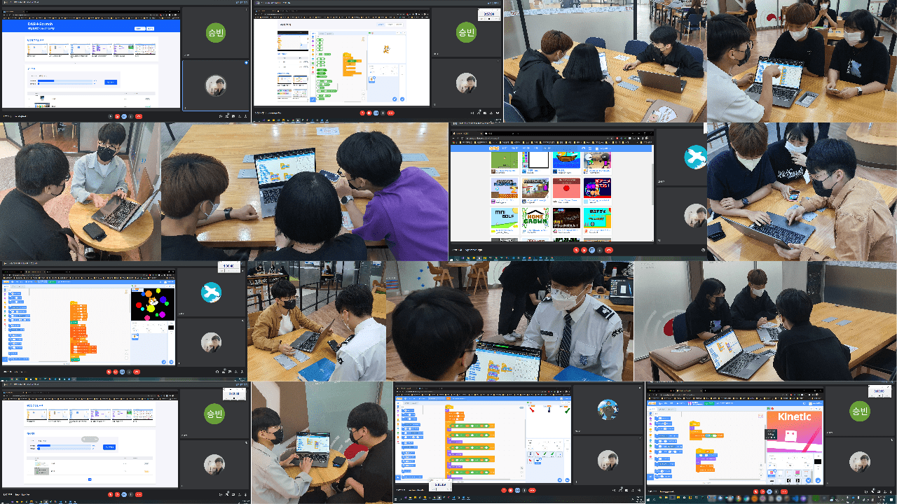

신 동주
Shin Dong Ju
동서대학교에서 실행하는 창의적 생활코딩 과목의 튜터로 3학기동안 지원하여 활동하였습니다.
창의적 생활코딩 과목은 소프트웨어 비전공 학과생들이 필수로 듣는 수업으로 많은 비전공자 학생들이 스크래치라는 프로그램을 통해
코드블록을 가지고 코딩을 해보면서 논리적으로 생각하는 법을 기르는 과목입니다.
처음에는 소프트웨어적으로 관심이없던 친구들이 많았지만 함께 스크래치라는 블록 코딩을 통해 논리적으로 생각하는 법을 길러주며
코드를 만들어가는 과정에 재미를 붙여갔고 튜티들과도 친해져서 메신저로도 궁금한점이 질문도 오는 등 3학기동안 세번의 튜터로 재미있게 가르쳤던 것 같습니다.
평소에도 내가 알고있는 것을 주변 친구들에게 쉽게 이해시키는 것을 좋아했지만, 막상 튜터라는 명목으로 비전공학생들에게
가르칠려고하니 내가 잘 할 수 있을까 하는 긴장과 고민도 많이 되었습니다.
하지만 위에서 말했던 것처럼 결국 가르치는 것을 좋아하는 제 모습, 튜티들을 이해시킬수록 재밌어하는 제 자신을 발견했고
또한 저도 튜터링을 하면서 어떻게 가르쳐줄까 하는 고민을 많이 하며 프로그래밍 사고발달에 도움이 많이 되었습니다.
<21년도 당시 코로나가 심해서 비대면 ZOOM을 통해 튜터링을 진행하였습니다>
<22년도 1학기 튜터링 사진>
<22년도 2학기 튜터링 사진>